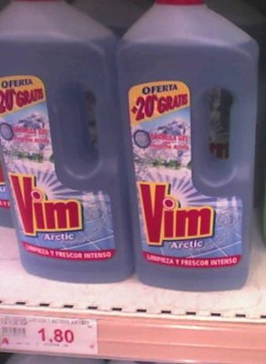
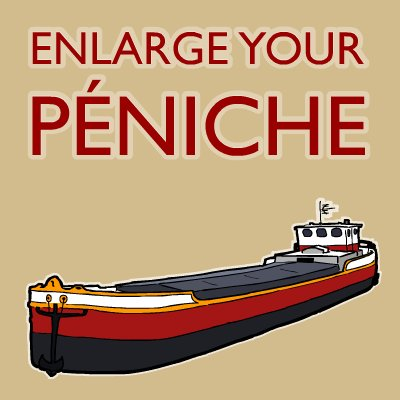

Style du code

- Indentation : 4 espaces
- Éditeur : vim
Taille idéale

- Fonction : 250 lignes maximum
- Fichier : 1000 lignes maximum
- Si c'est plus long : redécouper
Nom de variables explicites

- Pas de nom de variable d'un ou deux caractères
- Éviter i, j, k : utiliser page_index, nb_test, obj_index
- Éviter a1, a2, a3, a4 : utiliser un tableau
- Éviter obj_id, obj_name, obj_attr : utiliser une classe
Convention de nommage
- variable : nom_de_variable
- fonction : faireQuelqueChose()
- classe : MaSuperClasse()
- constante : INVARIANT
- Exemple :
def creeTruc(): truc = Truc(TRUC)
Espaces
- Espace : a_=_calcule(b,_c=d)
- Espace : def pouet(a,_b,_c=2):_return 0
- Et pas : a=calcule(b,_c_=_d)
Style du code : Conclusion
- Mon style est juste moins pire qu'un autre
- Il faut choisir un style et s'y tenir
- pylint permet de valider le style
- Lire la PEP 8 (Style Guide for Python Code) pour les détails